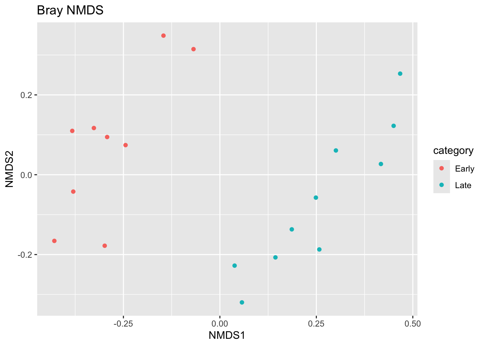
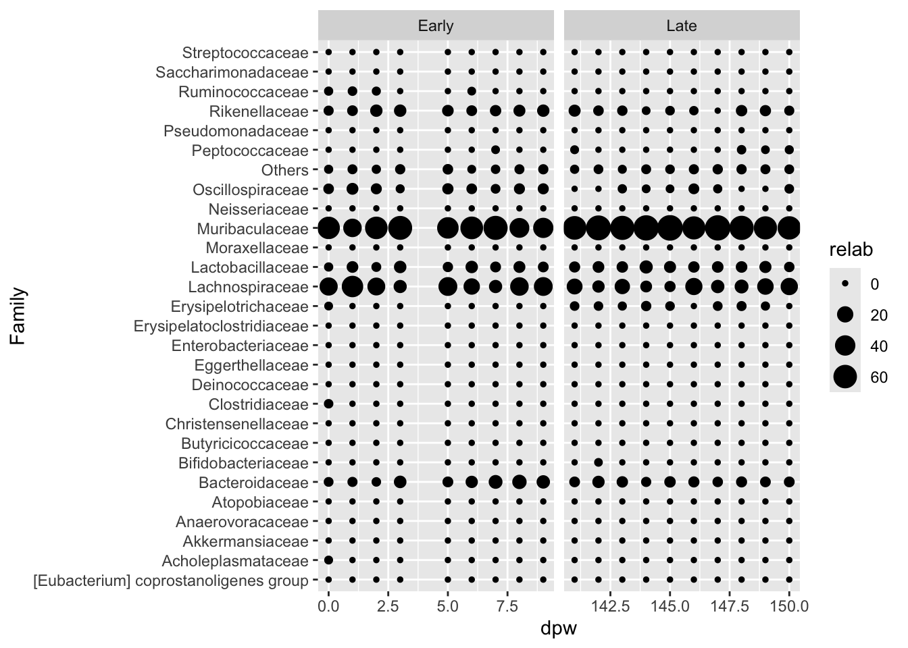

#download the file
download.file(
url = "https://mothur.s3.us-east-2.amazonaws.com/wiki/miseqsopdata.zip",
destfile = here::here("data/miseqsopdata.zip"))
#unzip the to get individual fastq files
unzip("miseqsopdata.zip")
#record path to data
data_dir <- here::here("data/MiSeq_SOP")5 Lab 5: Amplicon Metagenomics
6 Lab 5 amplicon metagenomics
6.1 Learning objectives
Click to expand
By the end of this lab you will be able to:
Execute a complete omics workflow from quality assessment to high-level analysis
Use DADA2 to generate an ASV/OTU count table from raw sequencing data
Analyze mouse microbiome data using the phyloseq package
Analyze mouse microbiome data using custom functions
7 Setup and introduction
In this lab, you will learn how to analyze amplicon metagenomics datasets. As a reminder, amplicon metagenomics involves amplifying specific gene regions from environmental samples. These are typically marker genes like rRNA genes (we’ll use 16S rRNA here) that help us identify which organisms are present in the studied environment. While amplicon metagenomics is most commonly used to study microbial communities, it can also detect macro-organisms like cryptic invasive species.
You will conduct a complete microbiome study from start to finish, beginning with demultiplexed reads and progressing through quality assessment, trimming, denoising, paired-end read merging, chimera removal, taxonomic annotation, and data analysis to identify trends in community attributes like richness, diversity, and composition.
7.1 Before you begin
Create a new GitHub repo for this lab.
- Make sure to initiate it with a
READMEfile and.gitignorefile.
In RStudio:
Create a new R Project with version control and connect it to your
GitHubrepo.Start a new Quarto file named
05-lab5.qmdMake sure your project contains a
data/directory for raw inputs and anoutputs/directory for generated results.Make sure to add all downloaded files and the
data/andoutputs/folders to the.gitignorefiles.
Commit these changes with an appropriate message.
7.2 The dataset
You will work with a subset of real-world data from Pat Schloss’s lab studying mouse microbiomes. This study examined changes in microbial communities of baby mice during their weaning process (a time series data) and it follows mothur’s SOP for analyzing Illumina MiSeq amplicon sequencing data.
The complete dataset (approximately 1.5GB uncompressed) is available here. Mothur, developed by the Schloss lab, was a pioneering, OS-agnostic suite of functions for amplicon metagenomics analysis. However, it processes large and diverse datasets slowly and has consequently lost a lot of it’s initial popularity to faster tools like USEARCH and R packages such as DADA2 (which we’ll use here).
Let’s verify that all files are present and accounted for.
list.files(data_dir)character(0)The folder contains multiple FASTQ files along with FASTA files and other files required for the mothur SOP. Several important features are worth noting:
The data has been demultiplexed, so you’ll work with pre-sorted samples.
Each sample has R1 and R2 files, giving you practice merging paired-end sequences. Unlike other packages
DADA2is good with trimming PE reads.
These sequences represent 2×250bp paired-end sequencing, but the target region (V4 of 16S rRNA) is just over 250bp Merged products expected to be in the range of 250bp-260bp long.
- The R1 and R2 files starting with “Mock” represent a mock community—a synthetic community with known species composition.
Note
If possible, including such as controls is good practice in sequencing studies because they allow you to evaluate sequencing accuracy against expected results. This particular mock community was constructed from 21 known bacterial strains by the Human Microbiome Project. The corresponding HMP FASTA file contains the expected results for comparison.
Now let’s examine the metadata file, which contains information about the samples you’ll analyze.
read.delim(base::paste(data_dir,"mouse.dpw.metadata", sep = "/" ))[
order(read.delim(base::paste(data_dir,"mouse.dpw.metadata", sep = "/" ))[[2]]),]Error in `file()`:
! cannot open the connectionThe first column contains sample names, and the second represents days past weaning (time since weaning from mother’s milk). Samples range from day 0 (weaning day) to 150 days. The file naming scheme is clear and informative: for example, sample F3D148 represents Female #3 at Day 148 past weaning.
You’ll also need to download the taxonomic reference dataset for sequence annotation—the equivalent of gene annotation in RNA-seq analysis. Here, the anotation will be a taxonomic assignment.
#Taxonomy file
download.file(
url = "https://zenodo.org/record/4587955/files/silva_nr99_v138.1_wSpecies_train_set.fa.gz?download=1",
destfile = here::here(here::here("data/silva_nr99_v138.1_wSpecies_train_set.fa.gz")))7.3 Required packages
This lab requires the DADA2 and phyloseq packages. DADA2 is a wrapper package that uses ShortRead and other Bioconductor packages to process amplicon metagenomics sequences. Phyloseq will handle part of the downstream analysis, particularly data viz.
BiocManager::install("dada2")
BiocManager::install("phyloseq")Next, let’s load the required libraries.
lapply(c("dada2","phyloseq","vegan","tidyverse",
"Biostrings"), library, character.only = T)7.4 Assignment requirements
Your GitHub repo for this assignment should include:
An RMD file with a complete, functioning pipeline analyzing amplicon metagenomics data from start to finish
- Ensure only needed steps are included
- Include proper header formatting like previous RMD documents with HTML output
- Ensure all additional figures required by this lab are produce
- Ensure to stage, commit, and push to
GitHuboften
Knitted HTML file with all figures and output tables included
All supplementary files (PDFs, PNGs, Excel/CSV files) specified during the lab
8 Getting started
8.1 Creating file lists for forward (R1) and reverse (R2) reads
First, let’s generate file lists to feed into DADA2 functions.
# All forward and reverse fastq file names have the exact format: samplename_r1_001.fastq and samplename_r2_001.fastq
#Note the pattern
fnFs <- sort(list.files(data_dir, pattern="_R1_001.fastq", full.names = TRUE))
fnRs <- sort(list.files(data_dir, pattern="_R2_001.fastq", full.names = TRUE))Next lets extract sample names from the list of file names, banking on the standardized naming scheme of the files.
#basename removes the folder names
sample.names <- stringr::str_split_fixed(basename(fnFs),"_",2)[,1]
sample.namescharacter(0)8.2 Quality check
Garbage in garbage out, here too we must inspect the quality of of the reads used for the analysis, remove low quality reads, and trim low quality bases.
8.2.1 Quality scores and mean read quality
As with previous labs quality check involves evaluating Q-scores across reads and positions within reads focusing on late cycles.
Why is that?
Therefore, we need to inspect position-specific Q-scores to determine trimming requirements. We also want to examine mean read quality to identify low-quality reads for removal.
Let’s start with forward reads (R1):
plotQualityProfile(fnFs[1:2])Error in `$<-.data.frame`:
! replacement has 1 row, data has 0This complex figure contains multiple information layers: The grayscale heatmap shows the frequency of each quality score at each base position. The green line indicates mean quality scores per position. Orange lines represent quality score distribution quartiles. The red line shows the proportion of reads extending to each position (cycle 250bp). The function also reports read counts per sample.
Note
Remember: During Illumina sequencing, nucleotides are added in cycles, with all sequences growing by one base per cycle. The flat red line is expected since all reads should have the same length. In other platforms without synchronized nucleotide addition and PCR amplification (e.g., Oxford Nanopore), reads can vary in length. ***
Forward reads look good, but it’s common practice to trim the final nucleotides in Illumina sequences to avoid poorly-controlled errors that can occur there. Although quality profiles don’t suggest additional trimming is needed, let’s truncate forward reads at position 240 (removing the last 10 nucleotides) when you get to the triming step.
Now let’s examine reverse read quality:
plotQualityProfile(fnRs[1:2])Error in `$<-.data.frame`:
! replacement has 1 row, data has 0Reverse reads show significantly worse quality, especially in later cycles. This is expected in Illumina sequencing due to inefficient waste product removal in later cycles and waste cary over from the sequencing of the forward reads. In early paired-end sequencing iterations when this technology was first introduced, R2 reads suffered from reduced quality for exactly this reason. These sequences were generated in 2013 using V2 chemistry, essentially when PE sequencing was newly introduced, explaining the poor R2 quality.
Based on these profiles, we’ll truncate reverse reads at position 160 where quality distribution crashes. Since R1 and R2 almost completely overlap for this library, reads should still align despite removing nearly 100 bases from R2. Additionally, trimming will improve error correction and sequence clustering into ASVs/OTUs downstream.
8.2.1.1 Question 1
In real-world analysis, you would inspect all files, not just the first two. Make sure that your code chunk checks all forward and reverse files.
8.2.2 Read trimming and quality filtering
Now that we understand read quality patterns, we can trim low quality bases, and filter low-quality reads. Since the filtering function requires an output destination, let’s create a folder for filtered reads.
Note
Note: Remember to add the trimmed files (or the filtered folder) to your .gitignore file.
#R1
filtFs <- here::here("outputs/filtered", paste0(sample.names, "_F_filt.fastq.gz"))
names(filtFs) <- sample.names
#R2
filtRs <- here::here("outputs/filtered", paste0(sample.names, "_R_filt.fastq.gz"))
names(filtRs) <- sample.namesNext, let’s filter the samples using DADA2’s default settings. Keep in mind these settings aren’t absolute and may need adjustment for real-world datasets.
Let’s examine the filterAndTrim function arguments: maxN indicates the maximum number of ambiguous bases—DADA2’s default is 0 since the algorithm doesn’t allow Ns. TruncLentruncates sequences to our chosen length based on Q-scores TruncQ Truncates from the first position with particularly poor quality that isn’t bad enough to be called an N. For example Q-score of 2 represents approximately 67% error probabilit, this is Illumina’s threshold for extremely poor quality reads. When using this option, you might also add minLen to remove reads trimmed too short due to poor quality. We won’t use it here, letting the maxEEargument and read alignment handle this.
The rm.phix=TRUE removes sequences belonging to Illumina’s internal standards. The maxEE parameter sets the maximum number of “expected errors” allowed in a read, providing better filtering than simple mean quality scores.
Note
Note: If using UNIX-based OS (e.g., macOS), set multithread=TRUE whenever it appears to parallelize processing. Unfortunately, Windows doesn’t support R’s parallelized apply functions called internally here.
out <- filterAndTrim(fnFs, filtFs, fnRs, filtRs, truncLen=c(240,160),
maxN=0, maxEE=c(2,2), truncQ = 2 ,rm.phix=TRUE,
compress=TRUE, multithread = TRUE)out is a dataframe that keeps record of how many reads are left in each of the filtered samples. Let’s check what percent of reads was last per sample by dividing the number of reads out vs number of reads in.
out2 <- as.data.frame(out) %>% mutate(prop = (100*(reads.out/reads.in)))
head(out2) reads.in reads.out prop
F3D0_S188_L001_R1_001.fastq 7793 7113 91.27422
F3D1_S189_L001_R1_001.fastq 5869 5299 90.28795
F3D141_S207_L001_R1_001.fastq 5958 5463 91.69184
F3D142_S208_L001_R1_001.fastq 3183 2914 91.54885
F3D143_S209_L001_R1_001.fastq 3178 2941 92.54248
F3D144_S210_L001_R1_001.fastq 4827 4312 89.33085Now let’s check the mean percent of sequences left:
mean(out2$prop)[1] 91.53986And let’s check the minimum percent of sequences left:
min(out2$prop)[1] 89.33085But what’s the sample with the lowest number of reads? Let’s check:
min(out2$reads.out)[1] 2914The first 6 files look good—the minimum proportion of retained sequences is almost 90%, and the sample with the fewest reads has close to 3k sequences. Everything looks solid. Congratulations, you passed the first sanity check!
8.2.3 Denoising and unique sequence estimation
As mentioned, amplicon sequencing typically aims to provide insights into microbial communities, including trends in “species” richness and diversity—important aspects of community structure and ecological function (which can relate to host health or disease).
The concept of prokaryotic microbial “species” is unclear since most don’t reproduce sexually. The criterion relies on sequence similarity. Traditionally, clustering 16S rRNA sequences with 97% similarity (called OTUs) is considered equivalent to studying communities at the species level. However, estimating species numbers and their sequence abundances per sample depends heavily on the clustering algorithm used. Most traditional clustering algorithms tend to overestimate diversity in microbial samples, potentially leading to data misinterpretation. This highlights the importance of mock communities as controls—if your clustering algorithm overestimates species in your mock community, you’re at least aware of pipeline biases.
One approach uses greedy clustering algorithms. Another approach doesn’t cluster sequences at 97% similarity but instead attempts to determine the true number of unique sequences in your dataset before errors were introduced, then groups sequences based on error models. This method is sensitive enough to differentiate sequences with single nucleotide variants. We don’t call these sequences OTUs but ASVs (amplicon sequence variants), which more closely resemble haplotypes than species. This is DADA2’s approach.
ASVs also have limitations. Most bacteria have multiple copies of the 16S rRNA gene (averaging ~7 copies), and different copies are usually not identical (refered to as haplotypes), meaning this approach might treat different copies from the same organism as as if they came from different organisms..
8.2.3.1 Denoising process
To determine ASV numbers in samples, DADA2 must first identify and correct error patterns in the data—essential to prevent inflated richness and diversity estimates. DADA2 uses a parametric error model to study data error rates. The learnErrors method learns error models from data by alternating between error rate estimation and sample composition inference until converging on a jointly consistent solution. Like many machine learning problems, the algorithm requires an initial guess, it uses the maximum possible error rates (assuming only the most abundant sequence is correct and all others are errors).
errF <- learnErrors(filtFs, multithread=T)
errR <- learnErrors(filtRs, multithread=T)We can visualize the learned errors:
plotErrors(errF, nominalQ=TRUE)
Error rates for each possible substitution (A→C, A→G, etc.) are shown. Points represent observed error rates for each consensus quality score. The black line shows estimated error rates after algorithm convergence. The red line shows expected error rates under nominal Q-score definitions. Here, estimated error rates (black line) fit well to observed rates (points), and error rates decrease with increased quality as expected. Everything looks reasonable.
8.3 Question 2
Have a code chunk that generates the same output but for the reveres read.
Export the plot as a PDF and push to your
GitHubrepoDo you see similar results for the revers reads?
8.3.0.1 ASV inference
Now that DADA2 understands and has corrected error rates, we can assess ASV numbers in samples.
Note
Note that we are assesing the ASVs for the forwared and revers prior to marging because we don’t want to marge sequences that don’t end up geing biologically relevant (i.e. first we correct and understand the true sequence diversity in the data and only after that marge reads).
dadaFs <- dada(filtFs, err=errF, multithread = TRUE)
dadaRs <- dada(filtRs, err=errF, multithread = TRUE)Let’s examine sample 1’s ASV count:
dadaFs[[1]]dada-class: object describing DADA2 denoising results
128 sequence variants were inferred from 1979 input unique sequences.
Key parameters: OMEGA_A = 1e-40, OMEGA_C = 1e-40, BAND_SIZE = 16The DADA2 algorithm inferred 128 true sequence variants from 1979 unique sequences in sample 1, that means that almost 95% of these sequences were not truly unique but rather the result of an error introduced during sequencing or PCR and the DADA2 algorithm was able to figure out which sequence they truly represent. That sounds super high and really messed up, but if you looked at the abundance of these unique sequences you would see that they most likely account for less than 1% of the actual sequences (i.e. abundant sequences are true diversity and rare sequences are most likely diversity dues to error).
8.3.1 Paired-end read merging
After obtaining high-quality, trimmed, and denoised - error corrected reads, it’s time to merge the paired-end sequences. Merging is performed by aligning forward reads with reverse-complement corresponding reverse reads. By default, merged sequences are only output if forward and reverse reads overlap by at least 12 bases and are identical in the overlap region.
mergers <- mergePairs(dadaFs, filtFs, dadaRs, filtRs, verbose=TRUE)
# Inspect the merger data.frame from the first sample
DT::datatable(mergers$F3D0,options = list(scrollX = TRUE, autoWidth = TRUE))The mergers object is a list of data frames from each sample. Each data frame contains the merged sequence, its abundance, and the indices of the forward and reverse sequence variants that were merged. Paired reads that didn’t exactly overlap were removed by mergePairs, reducing spurious output.
8.3.2 Sequence table construction
To analyze the data, it needs to be tabulated. Let’s generate an ASV table for studying trends across days past weaning.
seqtab <- makeSequenceTable(mergers)
dim(seqtab)The sequence table is a matrix with rows corresponding to samples and columns corresponding to ASVs. Column names are the actual sequences themselves (which is cumbersome but serves a purpose—we’ll change this later). As shown by the dim function output, the table contains 293 ASVs.
8.3.2.1 Sanity checks are important
When analyzing data, it’s good practice to periodically verify you’re progressing correctly. Now that we have a count table, let’s check if we’re working with appropriately-sized sequences.
The V4 region of 16S rRNA is approximately 250-260bp long. Let’s examine the sequence length distribution for each ASV:
table(nchar(getSequences(seqtab)))
251 252 253 254 255
1 88 196 6 2 All ASV sequences are 251-255bp long, which falls within the expected range. Let’s proceed to everyone’s favorite quality control step: chimera removal.
8.3.3 Chimera removal
We’ve addressed polymerase errors during PCR and sequencing with the DADA2 denoising algorithm. However, library preparation steps can also introduce errors, particularly chimeras, the integration of two different templates to one PCR product. Studies show ASVs make chimera detection easier than OTUs (though this depends on who you ask). DADA2 identifies chimeric sequences by testing whether sequences can be exactly reconstructed by combining left and right segments from two more abundant “parent” sequences.
seqtab.nochim <- removeBimeraDenovo(seqtab, method="consensus", multithread=F, verbose=TRUE)
#Proportion ASVs were removed due to chimeras?
100-(dim(seqtab.nochim)[2]/dim(seqtab)[2]*100)
sum(seqtab.nochim)/sum(seqtab)*100Chimeras represent about 21% of merged sequence variants (~300 ASVs reduced to 235), which seems high but is expected since chimeras can account for up to 30% of unique OTUs/ASVs. However, when accounting for abundances, chimeric sequences represent only ~4% of merged sequence reads (or non-chimeric sequences represent 96.4% of the total number of reads).
8.3.3.1 Read retention through the pipeline: final sanity check
Throughout the workflow, we’ve removed sequences due to poor quality at multiple steps. What if we removed too many? A general rule of thumb is maintaining a minimum of 1000 reads per sample for reasonable diversity and richness estimates. As a final sanity check, let’s examine reads per sample and retention through each step. Outside of trimming, no step should result in massive read loss, not even chimera removal. If such a step exists, this would be a good time to reflect on chosen quality control settings.
First, let’s create a function that sums the number of unique occurrences (sequences):
getN <- function(x){
sum(getUniques(x))
}Next, we’ll use apply to run the function on all list elements to gather our tracking data:
track <- cbind(out, sapply(dadaFs, getN), sapply(dadaRs, getN), sapply(mergers, getN), rowSums(seqtab.nochim))
colnames(track) <- c("input", "filtered", "denoisedF", "denoisedR", "merged", "nonchim")
rownames(track) <- sample.namesFinally, let’s calculate the proportion kept and display it:
track <- as.data.frame(track) %>% mutate(prop_kept = round(nonchim/input*100,2))
DT::datatable(track)We’ve averted an existential crisis—the majority of reads per sample were retained (minimum was over 70%) and all samples have above 1000 reads.
8.3.3.2 Data polishing part 1
Before proceeding, let’s ensure our ASV table is in a workable format. We’ll transform the matrix to a data table and change column names from sequences to numbered ASVs (1-235).
ASV_tbl <- as.data.frame(seqtab.nochim) %>%
`colnames<-`(base::paste("ASV", seq(1:ncol(seqtab.nochim)), sep = ""))
DT::datatable(ASV_tbl, options = list(scrollX = TRUE, autoWidth = TRUE))Much better!
Next, let’s remove the mock community since it won’t be part of the final analysis and transform the table:
ASV_tbl <- as.data.frame(t(ASV_tbl[-nrow(ASV_tbl),]))
#lets remove the ASVs that were only present in the mock communities
ASV_tbl <- ASV_tbl %>% mutate(rs = rowSums(ASV_tbl)) %>%
filter(rs > 0) %>% dplyr::select(-rs)We lost 14 ASVs present only in the mock community—not surprising since most mock community strains are human pathogens not expected in mice.
Next, let’s generate a DNAStringSet variable for later use in exporting a FASTA file containing representative sequences for each ASV, useful for future database queries like GenBank.
#Using DNAStringSet from Biostrings to read the seqs
ASV_seqs <- DNAStringSet(base::colnames(seqtab.nochim) %>%
`names<-`(base::paste("ASV",seq(1:ncol(seqtab.nochim)),sep = "")))8.3.4 Taxonomic assignment (sequence annotation)
It’s common at this point, especially in 16S/18S/ITS amplicon sequencing, to assign taxonomy to sequence variants. DADA2 uses a naive Bayesian taxonomic classifier method. The assignTaxonomy function takes sequences to be classified and a reference sequence training set with known taxonomy, outputting taxonomic assignments with bootstrap confidence cutoffs. The default value is 50, meaning in 50% of cases the ASV was classified as a certain taxonomic group. Classification proceeds through Domain, Kingdom, Phylum, Class, Order, Family, Genus, Species with bootstrapping at each level. When values drop below 50, classification stops and subsequent categories receive NAs.
DADA2 authors maintain formatted training FASTA files from multiple datasets. We’ll use the SILVA taxonomic dataset as it’s probably the best-maintained and curated ribosomal RNA dataset available.
taxa <- assignTaxonomy(seqtab.nochim, here::here("data/silva_nr99_v138.1_wSpecies_train_set.fa.gz"), multithread=TRUE)8.3.4.1 Data polishing part 2
Let’s convert the taxa matrix to a data frame and change row names from sequences to numbered ASVs:
taxa2 <- as.data.frame(taxa) %>%
`row.names<-`(base::paste("ASV", seq(1:nrow(taxa)), sep = ""))
DT::datatable(taxa2,options = list(scrollX = TRUE, autoWidth = TRUE))Now let’s inspect taxonomic assignments. All ASVs were successfully classified at least to the domain level—all classified as Bacteria, none as unknowns or Eukarya. However, some were classified as cyanobacteria/chloroplast (unexpected in mouse gut) or mitochondria. Let’s remove these and merge the workable ASV table with the taxonomy table, filtering out non-prokaryotic sequences.
Let’s start by removing non-prokaryotic ASVs and preparing the tables for joining:
taxa2 <- taxa2 %>% filter(Family != "Mitochondria") %>% filter(Order != "Chloroplast")
taxa3 <- taxa2 %>% mutate(ASVs = row.names(taxa2)) %>% dplyr::select(ASVs, everything())
ASV_tbl2 <- ASV_tbl %>% mutate(ASVs=row.names(ASV_tbl)) %>% dplyr::select(ASVs, everything())Now we join the taxa table. This will be used for analysis outside of phyloseq:
taxa3 <- taxa3 %>% inner_join(ASV_tbl2, by = "ASVs")taxa2 will be used for Phyloseq. We also filter the original ASV table:
taxa2 <- taxa2 %>% filter(rownames(taxa2)%in%taxa3$ASVs)
ASV_tbl <- ASV_tbl %>% filter(row.names(ASV_tbl) %in% taxa3$ASVs)Next, we generate a table of relative abundance of taxa per sample. Since the samples are columns, we use the sweep function rather than standard division:
taxa3[,(ncol(taxa2)+2):ncol(taxa3)] <- sweep(
taxa3[,(ncol(taxa2)+2):ncol(taxa3)],2,
colSums(taxa3[,(ncol(taxa2)+2):ncol(taxa3)]),'/')*100Finally, as a sanity check, do they sum to 100%?
colSums(taxa3[,(ncol(taxa2)+2):ncol(taxa3)]) F3D0 F3D1 F3D141 F3D142 F3D143 F3D144 F3D145 F3D146 F3D147 F3D148 F3D149
100 100 100 100 100 100 100 100 100 100 100
F3D150 F3D2 F3D3 F3D5 F3D6 F3D7 F3D8 F3D9
100 100 100 100 100 100 100 100 Now that we’ve cleaned the ASV table by removing the mock community and non-prokaryotic ASVs, we can clean up the StringSet and export the FASTA file:
ASV_seqs[names(ASV_seqs)%in%ASV_tbl2$ASVs]DNAStringSet object of length 218:
width seq names
[1] 252 TACGGAGGATGCGAGCGTTATC...GAAAGTGTGGGTATCGAACAGG ASV1
[2] 252 TACGGAGGATGCGAGCGTTATC...GAAAGCGTGGGTATCGAACAGG ASV2
[3] 252 TACGGAGGATGCGAGCGTTATC...GAAAGCGTGGGTATCGAACAGG ASV3
[4] 252 TACGGAGGATGCGAGCGTTATC...GAAAGTGCGGGGATCGAACAGG ASV4
[5] 253 TACGGAGGATCCGAGCGTTATC...GAAAGTGTGGGTATCAAACAGG ASV5
... ... ...
[214] 253 TACGTAGGAGGCAAGCGTTATC...GAAAGCGTGGGGAGCAAACAGG ASV228
[215] 253 TACGTAGGGAGCGAGCGTTATC...GAAAGTGTGGGGAGCAAACAGG ASV229
[216] 253 TACGGAGGATGCGAGCGTTATC...GAAAGCGTGGGGAGCAAACAGG ASV230
[217] 252 TACGGAGGGGGCGAGCGTTATC...GAAAGCTAGGGGAGCGAACAGG ASV231
[218] 252 TACGTAGGGGGCGAGCGTTATC...GAAAGCGTGGGGAGCAAATAGG ASV232writeXStringSet(ASV_seqs[names(ASV_seqs)%in%ASV_tbl2$ASVs], here::here("outputs/mouse_ASVs.fa"))Error in `.Call2()`:
! cannot open file '/Users/ihatam/Library/CloudStorage/OneDrive-LangaraCollege/Biol4315_lab_manual/outputs/mouse_ASVs.fa'#lets check that the file is ok
readLines(here::here("outputs/mouse_ASVs.fa"))[1:10]Error in `file()`:
! cannot open the connectionThe file looks legitimate.
8.3.5 Question 3
Give the file a new name and make sure it is pushed to your
GithubrepoSelect two ASVs - one from phylum Firmicutes and one from phylum Actinobacteria, for which the taxonomic classifier couldn’t determine genus and species
Identify their sequences in the fasta file and BLAST them against the nr database.
What are the top hits for each sequence? Could you resolve the species? Include the answer including screenshots of the results in your
.Rmdfile and knited html report.
8.3.6 Accuracy evaluation
One sample included here was a “mock community” containing a mixture of 20 known strains that was sequenced (this mock community is supposed to contain 21 strains, but P. acnes is absent from the raw data). Reference sequences corresponding to these strains were provided in the downloaded zip archive. Let’s return to that sample and compare the sequence variants inferred by DADA2 to the expected community composition.
Evaluating DADA2’s accuracy on the mock community:
unqs.mock <- seqtab.nochim["Mock",]
unqs.mock <- sort(unqs.mock[unqs.mock>0], decreasing=TRUE) # Drop ASVs absent in the Mock
cat("DADA2 inferred", length(unqs.mock), "sample sequences present in the Mock community.\n")DADA2 inferred 20 sample sequences present in the Mock community.mock.ref <- getSequences(file.path(data_dir, "HMP_MOCK.v35.fasta"))
match.ref <- sum(sapply(names(unqs.mock), function(x) any(grepl(x, mock.ref))))
cat("Of those,", sum(match.ref), "were exact matches to the expected reference sequences.\n")Of those, 0 were exact matches to the expected reference sequences.This mock community contained 20 bacterial strains. DADA2 identified 20 ASVs, all of which exactly match the reference genomes of expected community members. The residual error rate after the DADA2 pipeline for this sample is 0%.
8.4 Sample analysis
Boy, that was a long QC process, but now we are confident in our data.
The phyloseq package provides useful wrapper functions for ggplot2, vegan, and other packages. It serves as a starting point for microbiome data analysis.
Phyloseq objects require an ASV/OTU table, a taxa table, a Biostrings StringSet, and a metadata table. We have all components, including a basic metadata table. Let’s inspect and enhance it by adding some categories:
#lets see what it looks like
mdta <- read.delim(base::paste(data_dir,"mouse.dpw.metadata", sep = "/" ))Error in `file()`:
! cannot open the connection#Are the sample names similar to the sample names we have in the ASV table?
length(mdta$group %in% colnames(ASV_tbl))[1] 19#set the row names and massage the table
mdta <- mdta %>% mutate(category = if_else(dpw > 100 , "Late","Early")) %>%
mutate(gender = if_else(str_detect(group, "F"),"F","M")) %>%
mutate(subject = str_extract(str_split_fixed(group, "D", 2)[,1],"(\\d)+")) %>%
`row.names<-`(mdta$group)Let’s construct the phyloseq object and add the Biostrings element:
#Generating the phyloseq object
ps <- phyloseq(otu_table(as.matrix(ASV_tbl), taxa_are_rows=T),
sample_data(mdta),
tax_table(as.matrix(taxa2)))
ps <- merge_phyloseq(ps, ASV_seqs)
psphyloseq-class experiment-level object
otu_table() OTU Table: [ 195 taxa and 19 samples ]
sample_data() Sample Data: [ 19 samples by 5 sample variables ]
tax_table() Taxonomy Table: [ 195 taxa by 7 taxonomic ranks ]
refseq() DNAStringSet: [ 195 reference sequences ]We’re now ready to use phyloseq to analyze the microbial community from the mice.
8.4.1 Alpha diversity visualization
Alpha diversity measurements, such as species richness and diversity, help identify broad trends between communities. For example, large drops in species richness (how many species are present) or diversity (how many species are present and how evenly distributed they are) between early and late groups can prompt questions about causative factors like nutrition. We can also use calculated species richness to estimate sampling adequacy.
Phyloseq has a convenient wrapper function for vegan’s estimate function. Let’s calculate samples’ richness and diversity:
#Lets calculate richness and diversity
#Shannon and Simpson are diversity estimators, ACE is a richness estimator, observed is how many ASVs we have (198)
rnd <- estimate_richness(
ps, measures=c("Observed", "ACE","Shannon", "Simpson")) %>%
dplyr::select(-se.ACE)
DT::datatable(rnd[1:2])Let’s examine the first two columns of the table, showing the observed number of ASVs vs what we would expect given an infinit sample size with the ACE species richness estimator.
DT::datatable(rnd[1:2])The ratio of observed ASVs to the ACE estimation show a 1:1 ratio. This means that the sampling depth (number of sequences) was sufficient to represent the species richness in the community which is both cool scientifically and great for downstream. We can be confident that concoctions we draw are based on an accurate representation of the community.
8.4.1.1 Question 4
Export this table as a CSV file push it to your GitHub repository.
Next, let’s plot the diversity and richness estimations
rnd <- rnd %>% mutate(group = row.names(rnd))%>% inner_join(mdta, "group")
#make a long table
rndl <- rnd %>% gather("Estimator", "Value", 1:4) %>%
mutate(rd = if_else(Estimator == "Observed" | Estimator == "ACE",
"Richness","Diversity"))
ggplot(rndl, aes(x=dpw, y=Value, color = Estimator, fill= Estimator))+
geom_bar(stat = "identity", position = position_dodge())+
facet_grid(rd~category, scales = "free")
We see a slight dip in species richness and to a degree in diversity as well as we progress in days past weaning. There seems to ge a bounce back after day 142. However, meaningful insights are difficult to extract from such a small dataset.
8.4.1.2 Question 5
Create a code chunk that sets the theme to black and white and uses a colorblind-friendly palette from the RColorBrewer library.
Save the improved plot as PDF and push it to
GitHub.
8.4.2 Beta diversity
# Log transforming the data prior to using bray curtis so that overly abundant ASVs will not skew the results
ps.prop <- transform_sample_counts(ps, function(otu) log1p(otu))
#Perform the ordination
ord.nmds.bray <- ordinate(ps.prop, method="NMDS", distance="bray")Run 0 stress 0.08081375
Run 1 stress 0.08081375
... New best solution
... Procrustes: rmse 2.925114e-06 max resid 6.380447e-06
... Similar to previous best
Run 2 stress 0.140917
Run 3 stress 0.08081375
... Procrustes: rmse 2.144005e-06 max resid 4.310429e-06
... Similar to previous best
Run 4 stress 0.08081375
... Procrustes: rmse 1.082278e-05 max resid 2.450018e-05
... Similar to previous best
Run 5 stress 0.140917
Run 6 stress 0.08081375
... Procrustes: rmse 1.992484e-06 max resid 5.770048e-06
... Similar to previous best
Run 7 stress 0.08081375
... Procrustes: rmse 1.751768e-06 max resid 4.252895e-06
... Similar to previous best
Run 8 stress 0.08081375
... Procrustes: rmse 1.214321e-06 max resid 2.836649e-06
... Similar to previous best
Run 9 stress 0.08081375
... Procrustes: rmse 7.987736e-07 max resid 1.733214e-06
... Similar to previous best
Run 10 stress 0.08081375
... Procrustes: rmse 2.554793e-06 max resid 5.880112e-06
... Similar to previous best
Run 11 stress 0.08081375
... Procrustes: rmse 4.990751e-06 max resid 1.078002e-05
... Similar to previous best
Run 12 stress 0.08081375
... Procrustes: rmse 5.314255e-06 max resid 1.118554e-05
... Similar to previous best
Run 13 stress 0.08081375
... Procrustes: rmse 5.998479e-06 max resid 1.294877e-05
... Similar to previous best
Run 14 stress 0.08081375
... Procrustes: rmse 1.386453e-06 max resid 2.973912e-06
... Similar to previous best
Run 15 stress 0.08081375
... Procrustes: rmse 2.725491e-06 max resid 5.328667e-06
... Similar to previous best
Run 16 stress 0.08081375
... Procrustes: rmse 4.146396e-06 max resid 9.053051e-06
... Similar to previous best
Run 17 stress 0.140917
Run 18 stress 0.08081375
... Procrustes: rmse 1.681807e-06 max resid 3.679921e-06
... Similar to previous best
Run 19 stress 0.08081375
... Procrustes: rmse 1.876578e-06 max resid 4.165931e-06
... Similar to previous best
Run 20 stress 0.08081375
... Procrustes: rmse 1.323049e-06 max resid 2.879826e-06
... Similar to previous best
*** Best solution repeated 17 timesplot_ordination(ps.prop, ord.nmds.bray, color="category", title="Bray NMDS")
Ordination reveals clear separation between early and late samples, but you can improve this visualization.
8.4.3 Taxa distribution
Another approach to gain community insights is to look for changes in the distribution of the most abundant taxa across samples.
top20 <- names(sort(taxa_sums(ps), decreasing=TRUE))[1:20]
ps.top20 <- transform_sample_counts(ps, function(OTU) OTU/sum(OTU)*100)
ps.top20 <- prune_taxa(top20, ps.top20)
plot_bar(ps.top20, x="dpw", fill="Family") + facet_wrap(~category, scales="free_x") +
ylab("Relative abundance (% of seqs/sample)")
First, got to respect just how ugly is the default color scheme for this package. Second, the proportions of the top 20 ASVs appear more uniform between late and early samples and might explain the early-late differentiation. However, this graph needs improvement. Let’s create a version of this graph that’s less dependent on color schemes and is more intuitive to interpret.
First, let’s process the taxa table so values are relative abundance (i.e. percent of total sequences per sample) for family level taxonomy.
fam <- as.data.frame(taxa3 %>% dplyr::select(Family, where(is.numeric)) %>%
group_by(Family) %>% summarise_all(sum))
head(fam) Family F3D0 F3D1 F3D141 F3D142 F3D143
1 Acholeplasmataceae 1.31723381 0.9813944 0.0000000 0.0000000 0.0000000
2 Akkermansiaceae 0.15681355 0.0000000 0.0000000 0.0000000 0.0000000
3 Anaerovoracaceae 0.07840677 0.4089143 0.1669101 0.3242805 0.2824859
4 Atopobiaceae 0.00000000 0.0000000 0.0000000 0.0000000 0.0000000
5 Bacteroidaceae 2.41492865 2.8624003 3.9432506 7.2963113 5.2461663
6 Bifidobacteriaceae 0.37635252 0.0000000 0.3338202 1.1349818 0.4035513
F3D144 F3D145 F3D146 F3D147 F3D148 F3D149 F3D150
1 0.000000 0.05217391 0.0000000 0.20246068 0.0000000 0.0000000 0.0000000
2 0.000000 0.00000000 0.0000000 0.00000000 0.0000000 0.0000000 0.0000000
3 0.230747 0.41739130 0.1302083 0.31926491 0.1746815 0.1798221 0.1905669
4 0.000000 0.00000000 0.0000000 0.02336085 0.0000000 0.0000000 0.0000000
5 2.999712 5.33913043 4.6614583 3.52748793 4.5519934 3.9466212 4.0257265
6 0.605711 0.12173913 0.0781250 0.22582152 0.6987259 0.2650009 0.4525965
F3D2 F3D3 F3D5 F3D6 F3D7 F3D8 F3D9
1 0.49550376 0.2938296 0.000000 0.09124088 0.4579417 0.2463606 0.5089922
2 0.04282131 0.0000000 0.000000 0.00000000 0.0000000 0.0000000 0.0000000
3 0.39762648 0.8423115 0.271813 0.41058394 0.6266570 0.4703247 0.5259586
4 0.00000000 0.0000000 0.000000 0.00000000 0.0000000 0.0000000 0.0000000
5 2.06765767 7.8746327 4.104376 7.23844282 11.3280309 13.0347144 10.1119783
6 0.02446932 0.3134182 0.000000 0.00000000 0.0000000 0.0000000 0.0000000Note, numbers are now percent of reads per sample, but did we do a good job? If so, every column with sample data should add to 100.
#Does it sum to 100%
colSums(fam[,2:ncol(fam)]) F3D0 F3D1 F3D141 F3D142 F3D143 F3D144 F3D145 F3D146 F3D147 F3D148 F3D149
100 100 100 100 100 100 100 100 100 100 100
F3D150 F3D2 F3D3 F3D5 F3D6 F3D7 F3D8 F3D9
100 100 100 100 100 100 100 100 Looks like we did a good job.
Next, we’ll create an “Others” category summing all low-abundance families (i.e. those representing less then 1% of the total sequences per sample):
fam_o <- fam
fam[2:ncol(fam)][fam[2:ncol(fam)]<1] <- 0
fam_o[2:ncol(fam_o)][fam[2:ncol(fam_o)]>1] <- 0
Others <-colSums(fam_o[2:ncol(fam_o)])
fam[nrow(fam)+1,2:ncol(fam)] <- Others
fam[nrow(fam),1] <- "Others"
tail(fam) Family F3D0 F3D1 F3D141 F3D142
23 Rikenellaceae 2.885369 3.884686 6.697267 3.607621
24 Ruminococcaceae 1.677905 2.167246 0.000000 0.000000
25 Saccharimonadaceae 0.000000 0.000000 0.000000 0.000000
26 Streptococcaceae 0.000000 0.000000 0.000000 0.000000
27 [Eubacterium] coprostanoligenes group 0.000000 0.000000 0.000000 0.000000
28 Others 1.630861 2.637497 1.731692 2.351034
F3D143 F3D144 F3D145 F3D146 F3D147 F3D148 F3D149 F3D150
23 3.349475 1.182579 2.173913 1.848958 0.000000 5.209618 4.874125 2.858504
24 0.000000 0.000000 0.000000 0.000000 0.000000 0.000000 0.000000 0.000000
25 0.000000 0.000000 0.000000 0.000000 0.000000 0.000000 0.000000 0.000000
26 0.000000 0.000000 0.000000 0.000000 0.000000 0.000000 0.000000 0.000000
27 0.000000 0.000000 0.000000 0.000000 0.000000 0.000000 0.000000 0.000000
28 1.452785 2.538217 2.156522 2.942708 3.208223 3.082614 2.650009 2.358266
F3D2 F3D3 F3D5 F3D6 F3D7 F3D8 F3D9
23 7.408087 7.463271 5.626529 3.968978 5.133767 6.405375 7.431286
24 1.541567 0.000000 0.000000 1.201338 0.000000 0.000000 0.000000
25 0.000000 0.000000 0.000000 0.000000 0.000000 0.000000 0.000000
26 0.000000 0.000000 0.000000 0.000000 0.000000 0.000000 0.000000
27 0.000000 0.000000 0.000000 0.000000 0.000000 0.000000 0.000000
28 1.737322 3.114594 3.642294 1.307786 1.976380 2.732363 3.070920#Get a long table needed for ggplot2
fam_l <- fam %>% gather("group","relab",2:ncol(fam)) %>%
inner_join(mdta,"group")Note the other category.
Now let’s create the plot:
txplot <- ggplot(fam_l, aes(x = dpw, y=Family, size = relab))+
geom_point()+
facet_wrap(~category, scales = "free_x")
txplot
Much better! Without relying on problematic color schemes, we can see that there is a lot of similarity in the abundant taxa across all samples. We can also see that some families such as Murivaculacea are very abundant. We can also notice that there seem to be a bit more variability in the composition of the groups across samples in the really group for example the family Lachnospiraceae. From here, usually research focuses on literature review trying to understand what each of the fluctuating group does.
9 Summary
Wow, what an exciting ride! What have we learned during this lab?
QC for metagenomics reads is similar to what done so far, with the exception of being able to denoise data and correct for errors
You analyzed the microbiome of two groups of mice
The beta-diversity estimates demonstrated that there is a difference in the composition of each of the groups (i.e. early looks like early and late looks like late)
The alpha diversity showed a dip in “species” richness estimation as mice progress past weaning
- might explain the difference we see in composition, i.e. difference in composition comes from having fewer “species”
Family level relative abundance shows that abundant families are very similar across groups, so maybe the difference in composition is driven by changes to less abundant taxonomic groups rather than to the abundant groups
What does it all mean to mice? More study is needed.
Congrats on completing the last formal lab!